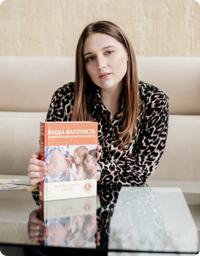

<section class="about">
  <div class="container">
    <h2 class="title">Про мене</h2>
    
    <div class="about__text-box">
      <p>
        Практикуючий психолог-консультант з питань дитячої та перинатальної
        психології. <br />
        Спеціалізуюсь на роботі з жінками, з сімейними парами перед плануванням
        вагітності, з дітьми та підлітками, з вагітними та з жінками після
        пологів.
      </p>
      <p>
        Допомагаю дітям і батькам знайти шлях до гармонійних взаємин, підтримки
        та збереження емоційного благополуччя.<br />
        Сучасні умови створюють низку складнощів, які можуть негативно впливати
        на нашу психіку наразі й у майбутньому та ускладнювати життєвий шлях.<br />
        Не відкладайте можливості записатися до психолога, якщо виникла
        потрібність.
      </p>
      <p>
        У роботі я використовую безліч сучасних методів: <br />
        Арт-терапія, метафоричні картки, ігрова терапія, казкотерапія,
        психодрама, а також працюю в когнітивно-поведінковому підході.
      </p>
    </div>
  </div>
</section>
